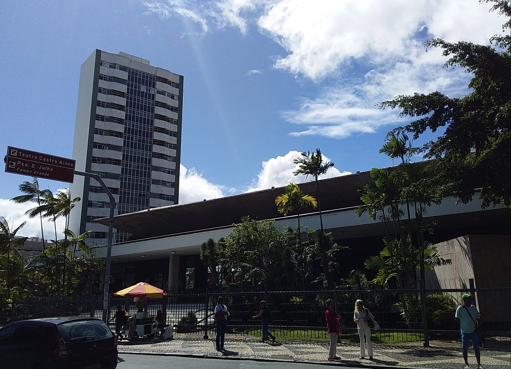

A história do Teatro Castro Alves, que pegou fogo cinco dias antes de inaugurar

A obra ficou pronta em 30 de junho de 1958, e a inauguração estava marcada para 14 de julho. Na madrugada chuvosa de 9 de julho, cinco dias antes da abertura oficial, um incêndio de causas nunca esclarecidas destruiu o bloco principal do Teatro Castro Alves. Salvador perdeu, antes de estrear, aquilo que o governo da Bahia descreve como a casa de espetáculos mais completa das Américas.
Sessenta e oito anos depois, em 1º de julho de 2026, o mesmo endereço no Largo do Campo Grande foi reaberto ao público após a maior intervenção de sua história, orçada em mais de R$ 260 milhões. Entre um episódio e outro cabe a história de um teatro que passou boa parte da vida em obra.
Um projeto que passou por três arquitetos
A ideia nasceu no Legislativo. Em 1948, o deputado Antônio Balbino levou à Assembleia Legislativa da Bahia o Projeto de Lei 432, propondo a construção de um grande teatro em Salvador. O terreno escolhido foi a Praça Dois de Julho, no Campo Grande. A sugestão de batizar a casa com o nome do poeta baiano Castro Alves partiu do teatrólogo Adroaldo Ribeiro Costa.
O desenho demorou a se fixar. Os primeiros riscos foram de Alcides da Rocha Miranda e José de Souza Reis. No governo de Otávio Mangabeira, Diógenes Rebouças foi nomeado para elaborar outra planta, considerada ultramoderna para os padrões da época, e a construção chegou a começar antes de ser interrompida.
Só quando Balbino já era governador o projeto definitivo saiu das pranchetas do arquiteto José Bina Fonyat Filho e do engenheiro Humberto Lemos Lopes, com menção honrosa na 1ª Bienal de Artes Plásticas de São Paulo, segundo o histórico oficial da casa. A obra, a cargo da Construtora Norberto Odebrecht, começou em 2 de julho de 1957 e foi entregue um ano depois.
Nove anos de ruínas, e uma ópera dentro delas
Dias antes do ato inaugural, por determinação de Balbino, o teatro foi aberto à visitação pública. Foi nesse intervalo que o fogo veio. Em 18 de julho de 1958, uma missa campal no Campo Grande marcou o início das obras de reconstrução. A Concha Acústica, poupada pelas chamas, foi inaugurada em abril de 1959 e passou a funcionar sozinha enquanto o bloco principal era erguido outra vez.
A reconstrução levou nove anos e atravessou três gestões estaduais. Nesse tempo, as ruínas viraram cena: a arquiteta Lina Bo Bardi transformou as estruturas remanescentes no cenário da montagem da Ópera dos Três Tostões, dirigida por Martim Gonçalves a partir do texto de Bertolt Brecht.
O teatro só foi inaugurado oficialmente em 4 de março de 1967, em noite de gala no governo de Lomanto Júnior, com a presença do presidente Castelo Branco. A programação de abertura durou cerca de um mês e reuniu a Companhia Nacional de Ballet, o Quinteto Villa-Lobos, a peça Oh Que Delícia de Guerra, o show Rosa de Ouro, com Clementina de Jesus e Paulinho da Viola, além de Dorival Caymmi e do Madrigal da Universidade Federal da Bahia. Houve ainda um recital de poesias pelos 120 anos de nascimento de Castro Alves.
Em julho de 1989, depois de um concerto da Orquestra Sinfônica da Bahia com o Afoxé Filhos de Gandhy, a casa fechou de novo para reforma. A reabertura, em 22 de julho de 1993, juntou no palco da Sala Principal Maria Bethânia, Gal Costa e João Gilberto.
Tombado pelo Iphan, fechado por outro incêndio em 2023
O Conselho Consultivo do Patrimônio Cultural do Iphan aprovou o tombamento do teatro em 27 de novembro de 2013, no processo 1509-T-2003. A homologação saiu com a Portaria MinC nº 96, publicada no Diário Oficial da União em 19 de setembro de 2014. O teatro está inscrito nos Livros do Tombo Histórico e das Belas Artes. Por isso o histórico oficial da casa registra 2014, e não 2013, como o ano do tombamento federal.
O fogo voltou em 25 de janeiro de 2023. As chamas começaram na cobertura, no início da tarde, e só foram contidas doze horas depois. O laudo do Departamento de Polícia Técnica concluiu no mês seguinte que o incêndio não havia sido criminoso. A Sala Principal ficou fechada a partir dali. Em 7 de janeiro de 2025, um princípio de incêndio no telhado voltou a mobilizar os bombeiros, sem feridos.
O complexo depois da reforma
A reabertura de 2026 encerrou a terceira e última etapa do projeto Novo TCA, executado pela Companhia de Desenvolvimento Urbano da Bahia. O complexo tem hoje Sala Principal de 1.554 lugares, Sala do Coro para até 250 pessoas e Concha Acústica para 5.000, além de Centro Técnico, Jardim Suspenso e Café Teatro. Ali trabalham os dois corpos artísticos estáveis do estado, a Orquestra Sinfônica da Bahia e o Balé Teatro Castro Alves.
Entre as novidades estão o Edifício Lâmina, com elevador que liga os diferentes níveis do complexo, e dois espaços incorporados ao Centro Técnico: o Armazém Cenográfico e o Laboratório Cenográfico. O laboratório guarda um acervo de mais de sete mil figurinos, disponíveis para empréstimo gratuito a produções de pequeno porte.
"O armazém e o laboratório representam um avanço importante para a política cultural da Bahia, fortalecendo a produção artística ao oferecer melhores condições para criação, construção, armazenamento e preservação de cenários", afirmou o diretor do TCA, Moacyr Gramacho, ao site Bahia.ba.
Por ora, a operação é assistida: a chamada Operação Teste serve para validar os sistemas cênicos, acústicos, elétricos e mecânicos instalados na obra. A temporada de reabertura teve Gilberto Gil, Lazzo Matumbi e Daniela Mercury, e a Orquestra Sinfônica da Bahia fez concertos ao longo de julho para testar a acústica da sala.
Casas como o Teatro Amazonas, em Manaus, e o Theatro da Paz, em Belém, contam a própria história por ciclos econômicos. O Teatro Castro Alves conta a dele por incêndios e reconstruções, sempre no mesmo terreno onde tudo ardeu em 1958.